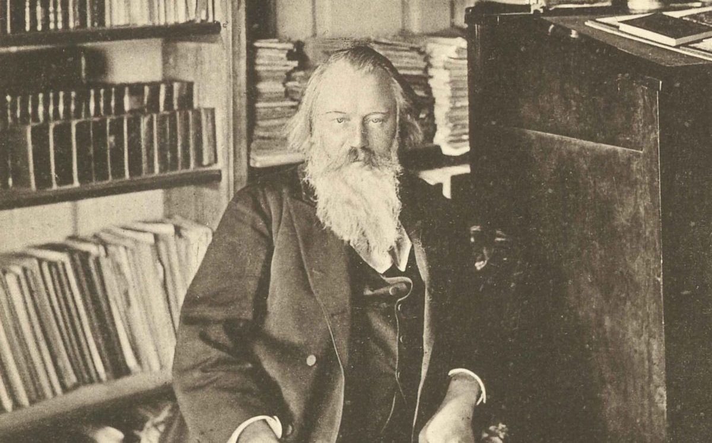

Critiques constructives J-3
16 septembre 2020

« Quand tous les coups sont désormais permis, cela va trop loin »
Benjamin Griveaux
« Comme Dieu le Père, Brahms s'est attaché à créer quelque chose à partir de rien… Assez de ce sinistre jeu ! Il suffira de savoir que Monsieur Brahms est parvenu à trouver, dans sa Symphonie en mi mineur, le langage qui exprime le mieux son désespoir latent : le langage de la plus profonde impuissance musicale. »
— Hugo Wolf, Salonblatt, Vienne, 31 janvier 1886
« Les sympathies que Brahms provoque ici et là m'avaient longtemps semblé une énigme, jusqu'à ce que, pratiquement par hasard, j'en aie déterminé le type humain. Il souffre de la mélancolie de l'impuissant. »
— Friedrich Nietzsche, 2d post-scriptum au Cas Wagner, 1888